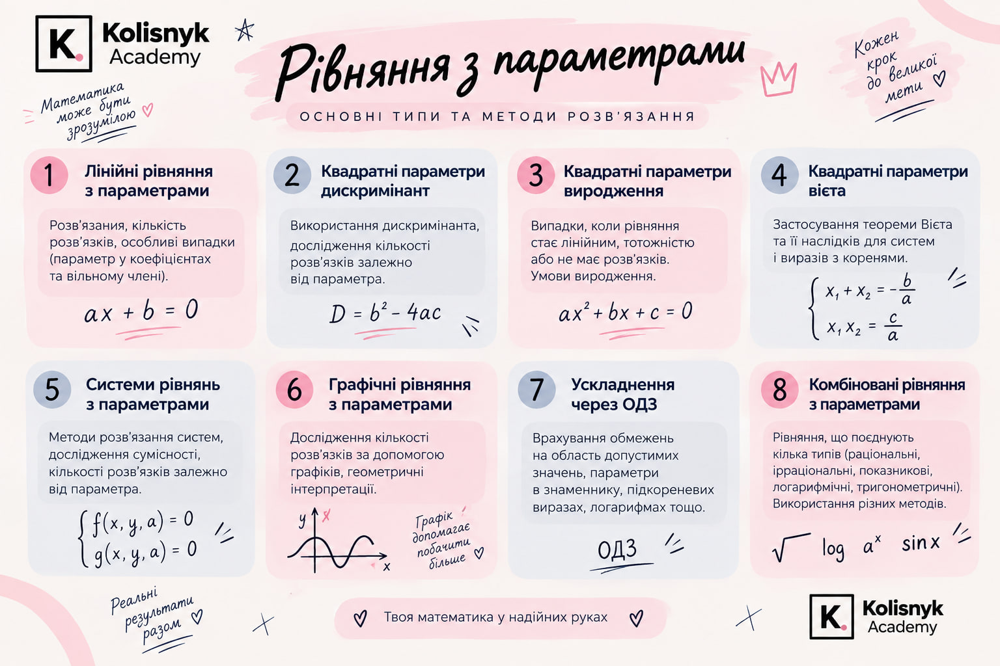
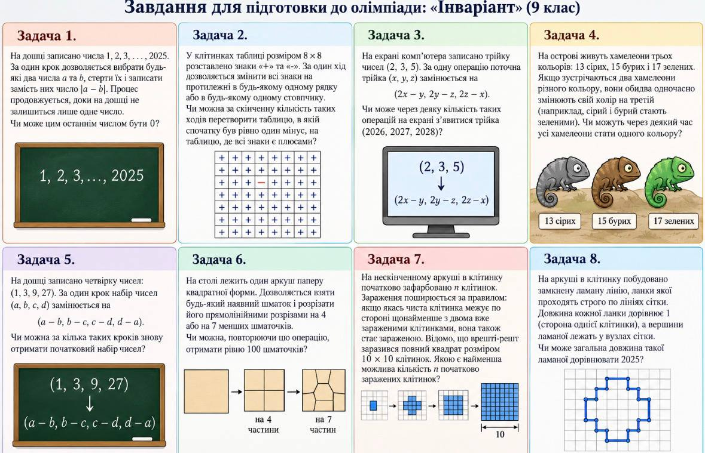

Викладач веде до цілі
Пояснює теми, фіксує прогрес, перевіряє практику й дає конкретний зворотний зв’язок.
Досвідчені викладачі, системний контроль навчання та команда, яка супроводжує учня до результату.

Навчання, безкоштовні матеріали, ефіри та зв’язок із командою — без пошуків у десятках профілів.
Навчання — це спільна робота. Кожен у команді має свою відповідальність, щоб учень не залишався сам із труднощами та рухався до цілі послідовно.
Підібрати свою командуНе лише пояснює тему: фіксує прогрес, дає практику, перевіряє домашні завдання та підтримує темп.
Контролює якість занять, розробляє матеріали й допомагає вдосконалювати методику.
Збирають сильну команду та відповідають за всю систему навчання академії.
Організовує уроки, підбирає найкращий розклад, комунікує та допомагає швидко вирішувати питання.
Спробуйте формат, перевірте знання або приєднайтеся до відкритого уроку.
Пояснює теми, фіксує прогрес, перевіряє практику й дає конкретний зворотний зв’язок.
Конспекти, записи занять, презентації та домашні завдання зберігають структуру навчання.
Узгоджує розклад, нагадує про заняття й допомагає швидко перенести урок за потреби.
Переглядає програму, записи занять і динаміку учня та за потреби коригує підхід.
Щомісяця надсилаємо відгук: що вже вивчили, де є прогрес і над чим працюємо далі.
Катерина та Олександр збирають команду й контролюють, щоб навчання вело до поставленої цілі.
Знайдемо викладача, з яким буде зрозуміло й комфортно, а навчання приведе до найкращого можливого результату.
Показуємо матеріал, працюємо на спільній дошці, даємо практику та перевіряємо домашні завдання.

Завдання структуровані за темами й підготовлені так, щоб учень бачив логіку, а не набір формул.
Результат — це не лише цифра. Це ще й момент, коли учень перестає списувати, самостійно бачить хід розв’язання і довіряє собі.
Поставити свою цільПриріст на 68 балів — один із найсильніших наших результатів з математики.
На старті знань не вистачало, а завдання забирали надто багато часу. Ми допомогли побороти страх, розібратися в темах і працювати швидше — результат з’явився лише за 4 місяці.
Раніше списував із ChatGPT на 9. Наприкінці року сам розв’язав контрольну на 9 за 30 хвилин і ще встиг зіграти одну гру.
У вартість входять не лише хвилини дзвінка: матеріали, домашні завдання, перевірка, методичний контроль і комунікація.
Залишаєте ім’я та контакт. За бажанням одразу описуєте, що цікавить, або використовуєте додаткові налаштування форми.
Менеджер уточнює цілі й побажання, читає вашу відповідь і ставить лише ті додаткові запитання, які допоможуть зрозуміти найкращий формат.
Пропонуємо викладача, який найкраще відповідає вашому запиту, і проводимо пробне заняття, щоб переконатися, що вам комфортно разом.
Будуємо ритм, відстежуємо прогрес і регулярно даємо зворотний зв’язок. Це не окремий урок раз чи двічі на тиждень, а постійна спільна робота.
Якщо не знайшли відповідь — напишіть менеджеру, він допоможе зорієнтуватися.
Запитати в TelegramДостатньо імені та контакту. Решту уточнить менеджер — без тестів і довгих анкет.
↗Відповість жива людина.
Написати напряму в Telegram.